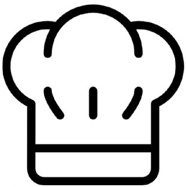
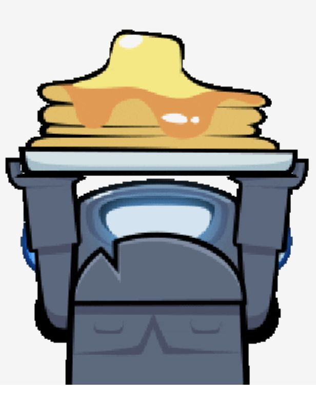

¿Quienes somos?
Somos una cooperativa con fines de lucro que se dedica a la producción y distribución de kekes a nivel internacional. La cual busca traer alegria a los comensales.
¿Como se producen nuestros productos?
La elaboración de los kekes es un proceso que requiere de sumo cuidado y mucho cariño por parte de los cocineros asignados, los cuales son Victor y Robert. Ellos son quenes se encrgan de laborar tanto las mazclas para kekes al igual que las salsas y los rellenos que viajan desde la cocina a tu mesa.
Para crear la masa base para kekes se utilizan ingredientes basicos como harina leche y huevos. Luego, a la mazcla base se le añaden lo que nos gusta llamar "Ajentes del Sabor". estos ajentes son ingredientes que trabajan en conjunto para producir los diversos sabores de nuestro catálogo, un eemplo es el keke de chocolate, ese se alabora con la mezcla base y su Ajente del Sabor es una mezcla entre cacao, azucar mascabo y jenjibre.
Una vez obtenida la mezcla base (con o sin el Ajente) se vuelca un poco en varias sartenes para, de esa manera cocinarla y tras unos cuantos minutos se debe dar vuelta el keke para que se cocinen las dos caras. Una vez cocinadas ambas caras, se retira de la sarten y se le colocan los agregados elegidos por el cliente, pueden ser tanto frutas, galletita e incluso alguna de nuestras salsas
.jpg)
Monoberto
Uno de los primeros repartidores de la compañia y el mas confiable de todos
Victor

El creadorde todas las recetas de nuestra cooperativa y el jefe de cocina.

Robert
El mejor en la ejecición de recetas y un incanable apasionado al keke.